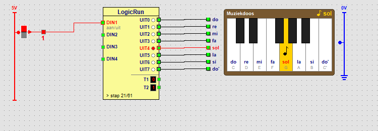

Parcours › Avancé › Leçon 18 sur 18

Quelle sortie joue quelle note ? Le nombre est la valeur de la sortie en tant que bit, comme dans la leçon 15.
| Note | do | re | mi | fa | sol | la | si | do' |
|---|---|---|---|---|---|---|---|---|
| Sortie | UIT0 | UIT1 | UIT2 | UIT3 | UIT4 | UIT5 | UIT6 | UIT7 |
| Nombre | 1 | 2 | 4 | 8 | 16 | 32 | 64 | 128 |
Un pas active une sortie : cette note sonne. La colonne durée x dit combien de temps. Avec une durée de 125 ms, la durée 4 est une noire (un temps, une demi-seconde) et la durée 8 une blanche (deux temps). Un pas sans sortie est un silence.
Deux fois la même note de suite ? La sortie reste simplement active et vous entendez une seule longue note. C’est pourquoi il y a un court silence entre les deux : 3 tops la note et 1 top de silence, ensemble de nouveau 4. Voici le début de la chanson :
| Pas | Sortie | Durée | Note |
|---|---|---|---|
| 1 | UIT0 | 3 | do |
| 2 | - | 1 | silence |
| 3 | UIT0 | 4 | do |
| 4 | UIT4 | 3 | sol |
| 5 | - | 1 | silence |
| 6 | UIT4 | 4 | sol |
| 7 | UIT5 | 3 | la |
| 8 | - | 1 | silence |
| 9 | UIT5 | 4 | la |
| 10 | UIT4 | 8 | sol (blanche) |
Faites jouer la chanson plus vite, puis plus lentement.
Changez la Durée dans la fenêtre LogicRun. Avec 100 ms, c’est plus rapide, avec 200 ms plus lent. Toutes les notes changent ensemble, car leur durée est un multiple de la durée du pas.
À la fin de la chanson, faites sonner trois notes ensemble : do, mi et sol.
Choisissez le dernier pas (le silence) et cochez UIT0, UIT2 et UIT4. Donnez-lui la durée 8. Trois notes ensemble forment un accord ; do-mi-sol est l’accord de do majeur.
Faites Frère Jacques : do ré mi do, do ré mi do, mi fa sol (long), mi fa sol (long). Ou inventez une mélodie avec les 8 notes.
Sur un panneau vide, placez un interrupteur, un bloc LogicRun et une boîte à musique, et faites les fils. Créez avec + pas ces pas : do 4, ré 4, mi 4, do 3, silence 1, do 4, ré 4, mi 4, do 4, mi 4, fa 4, sol 8, mi 4, fa 4, sol 8 et à la fin un silence de 8. Attention : après la quatrième note (do) vient encore un do, d’où le court silence. LogicRun a 64 pas au plus : assez pour une courte chanson.